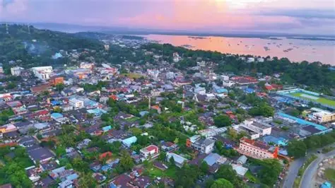
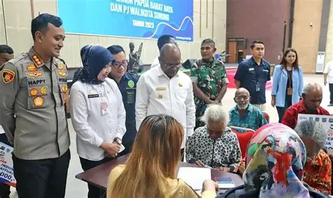

Daerah
Perkembangan Terbaru Kota Sorong dan Papua Barat Daya
Informasi terbaru seputar perkembangan wilayah,
pemerintahan, dan masyarakat Papua Barat Daya.
BACA SELENGKAPNYA

Pendidikan
Transformasi Digital Pendidikan Papua Barat Daya
Pemanfaatan teknologi digital untuk meningkatkan
kualitas pendidikan generasi muda Papua.
BACA SELENGKAPNYA

Olahraga
Prestasi Atlet Papua di Tingkat Nasional
Berita olahraga dan prestasi putra-putri Papua
dalam berbagai kompetisi nasional.
BACA SELENGKAPNYA
← Kembali ke Daftar Berita
Daerah
Perkembangan Terbaru Kota Sorong dan Papua Barat Daya
Redaksi CWM · 13 Juli 2026
Kota Sorong dan wilayah sekitarnya di Papua Barat Daya terus menunjukkan perkembangan di berbagai sektor, mulai dari infrastruktur, pelayanan publik, hingga pemberdayaan masyarakat lokal.
Pemerintah daerah dilaporkan tengah mempercepat sejumlah proyek pembangunan fasilitas umum yang ditujukan untuk mendukung aktivitas ekonomi warga, termasuk perbaikan akses jalan antar distrik.
Selain pembangunan fisik, sejumlah program pemberdayaan masyarakat adat juga terus digalakkan, dengan melibatkan tokoh-tokoh lokal dalam proses perencanaan agar pembangunan tetap selaras dengan kearifan setempat.
CWM Channel akan terus memantau dan melaporkan perkembangan terbaru seputar Papua Barat Daya melalui program Berita Pagi, Berita Siang, dan Berita Malam.
← Kembali ke Daftar Berita
Pendidikan
Transformasi Digital Pendidikan Papua Barat Daya
Redaksi CWM · 13 Juli 2026
Sejumlah sekolah di Papua Barat Daya mulai mengadopsi perangkat dan metode pembelajaran digital sebagai bagian dari upaya meningkatkan kualitas pendidikan di wilayah tersebut.
Program ini melibatkan pelatihan bagi tenaga pengajar agar lebih terbiasa menggunakan perangkat digital dalam proses belajar mengajar, termasuk pemanfaatan materi pembelajaran interaktif berbasis video dan aplikasi.
Tantangan utama yang masih dihadapi adalah keterbatasan akses internet di sejumlah distrik terpencil, sehingga pemerataan program ini masih memerlukan dukungan infrastruktur telekomunikasi yang lebih luas.
Dinas pendidikan setempat menyatakan optimismenya bahwa transformasi digital ini akan membuka lebih banyak peluang belajar bagi generasi muda Papua di masa depan.
← Kembali ke Daftar Berita
Olahraga
Prestasi Atlet Papua di Tingkat Nasional
Redaksi CWM · 13 Juli 2026
Atlet-atlet asal Papua kembali menorehkan prestasi membanggakan di berbagai ajang olahraga tingkat nasional, mengukuhkan reputasi Papua sebagai salah satu lumbung talenta olahraga Indonesia.
Sejumlah cabang olahraga seperti atletik, sepak bola, dan angkat besi menjadi andalan para atlet muda Papua Barat Daya dalam meraih medali di kompetisi antar provinsi.
Pembinaan usia dini melalui sekolah-sekolah olahraga di Kota Sorong disebut menjadi salah satu faktor pendorong lahirnya bibit-bibit atlet berbakat dari wilayah ini.
CWM Channel berkomitmen untuk terus mendukung dan meliput perjalanan para atlet Papua menuju panggung kompetisi yang lebih besar.